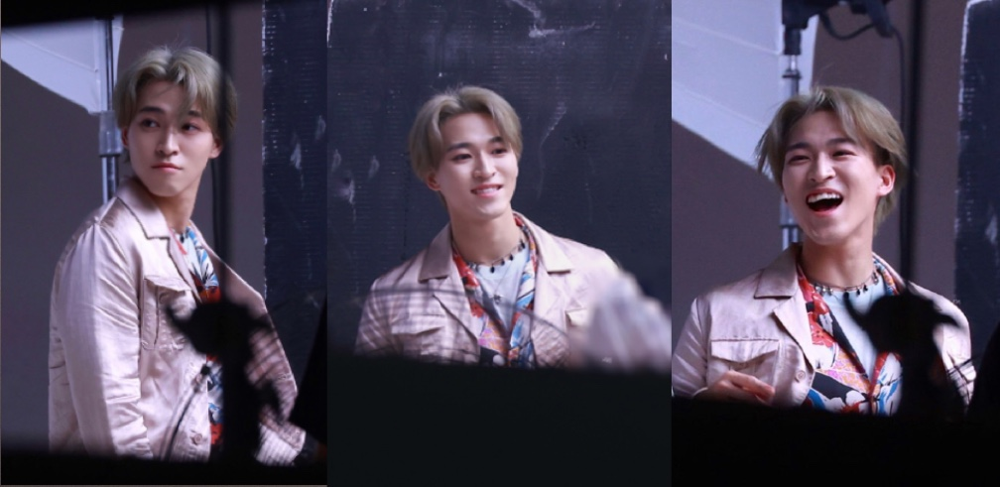

如果你对他感兴趣的话，
不要听别人说他怎样，请亲自去了解他。

文案还没想好。巴拉巴拉巴拉巴拉巴拉巴拉巴拉巴拉巴拉巴拉巴拉巴拉巴拉巴拉巴拉巴拉巴拉巴拉巴拉巴拉巴拉巴拉巴拉巴拉巴拉巴拉巴拉巴拉巴拉巴拉巴拉巴拉巴拉巴拉巴拉巴拉巴拉巴拉巴拉巴拉巴拉巴拉巴拉巴拉
字体大小也还没学会怎么调，怎么在指定位置插入图片也待学习。巴拉巴拉巴拉巴拉巴拉巴拉巴拉巴拉巴拉巴拉巴拉巴拉巴拉巴拉巴拉巴拉巴拉巴拉巴拉巴拉巴拉巴拉巴拉巴拉
真实感性，热血又温柔，强大且真诚，聪明善良，乐观开朗。巴拉巴拉巴拉巴拉巴拉巴拉巴拉巴拉巴拉巴拉巴拉巴拉巴拉巴拉巴拉巴拉巴拉巴拉巴拉巴拉巴拉巴拉巴拉巴拉
热血漫画的男主，台上大魔王，台下小公主。巴拉巴拉巴拉巴拉巴拉巴拉巴拉巴拉巴拉巴拉巴拉巴拉巴拉巴拉巴拉巴拉巴拉巴拉巴拉巴拉巴拉巴拉巴拉巴拉